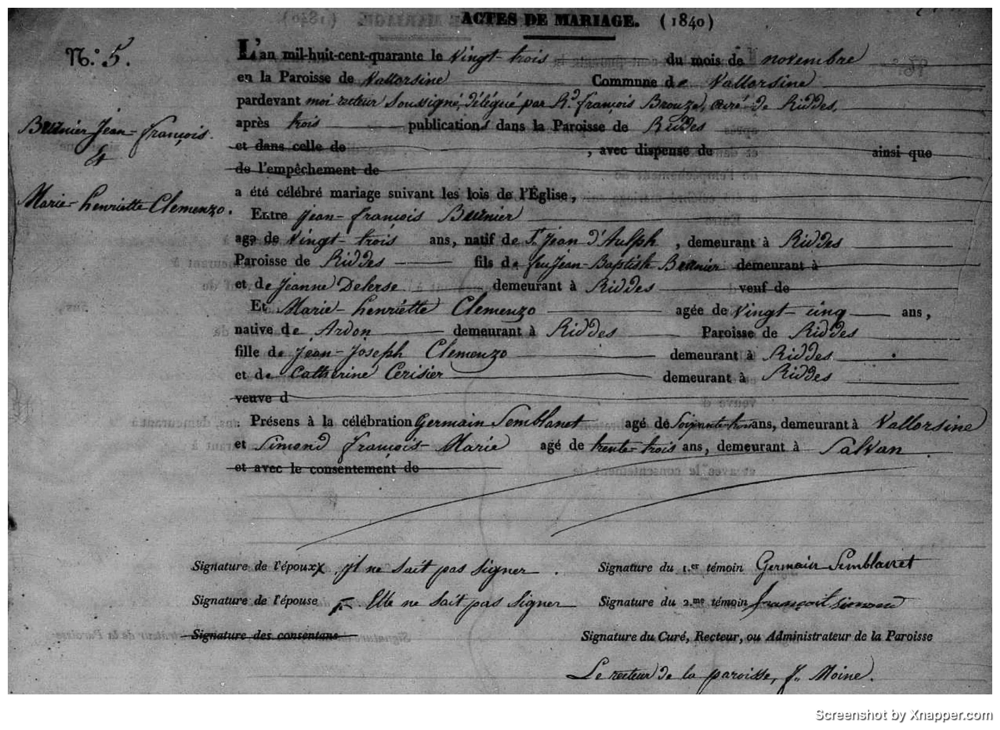
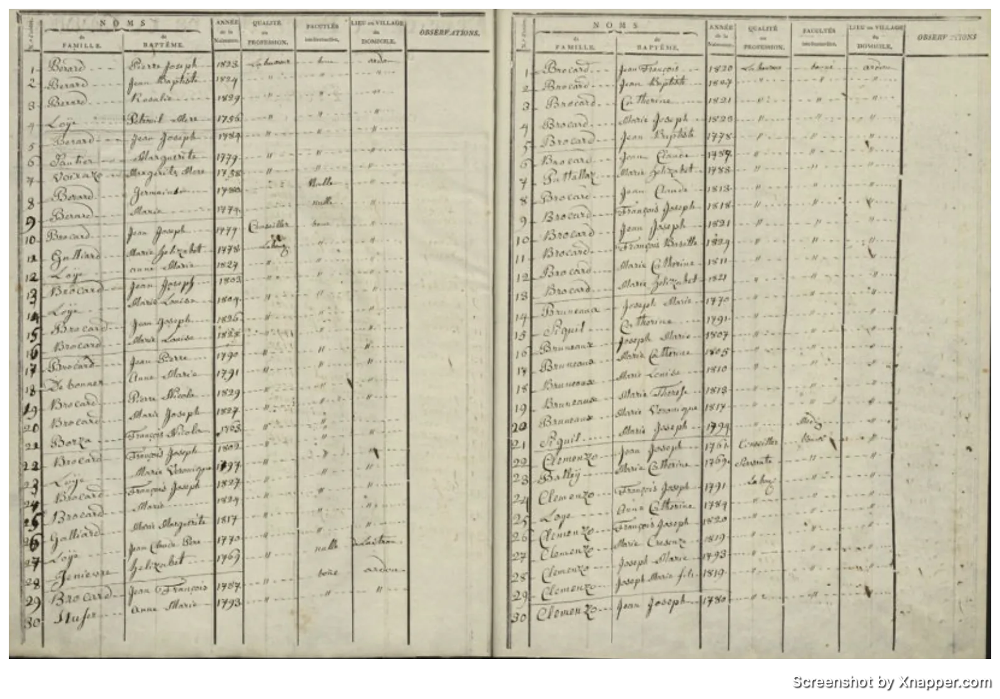
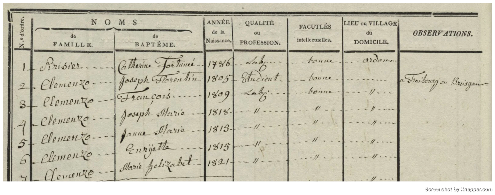
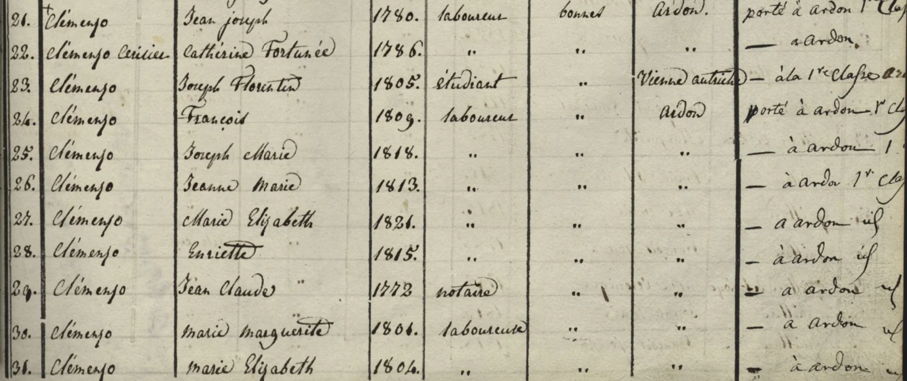

La historia
Marie Henriette nació en Ardon en 1815, hija de Jean Joseph Clemenzo y Marie Catherine Cerisier. Como sus hermanos, aparece de niña en los censos de ~1829 (Riddes 2ème classe, línea 28, y Ardon 1re classe) y en el de Riddes de 1837 (línea 43), siempre en el hogar paterno.
El documento que la distingue es su acta de matrimonio: el 23 de noviembre de 1840, en la parroquia de Vallorsine (Vallorcine) — del lado saboyano del macizo del Mont Blanc, entonces reino de Cerdeña —, se casó con Jean-François Battnier (Betnier), de 23 años, natural de St-Jean-d'Aulph en Saboya y residente en Riddes, hijo del difunto Jean-Baptiste Battnier y de Jeanne Delerse. El rector de Vallorsine celebró por delegación del Rdo. François Brouze, cura de Riddes, tras tres publicaciones en la parroquia de Riddes. Ella tenía 25 años — dos más que el novio.
Un detalle social: ninguno de los dos sabía firmar («Il ne sait pas signer» / «Elle ne sait pas signer») — contraste notable con su hermano mayor Joseph Florentine Clemenzo, que por esos mismos años ejercía de cirujano en Nápoles.
Después del matrimonio la pareja no desaparece del registro valesano: en 1849 un documento del archivo comunal de Riddes (D 10/25) la menciona como «Battnier née Clemenzoz, domiciliée à Saxon» — la comuna vecina de Riddes, cruzando el Ródano.
Cronología
| Año | Fuente | Qué dice |
|---|---|---|
| 1815 | árbol/censos | Nace en Ardon, Valais |
| 1829 | Censo Riddes 2ème classe, l.28 | En el hogar paterno de Jean Joseph Clemenzo; domicilio Ardon |
| s/f (¿1829?) | Censo Ardon 1re classe | En el hogar de Jean Joseph Clemenzo |
| 1837 | Censo Riddes, l.43 | En el hogar paterno |
| 1840-11-23 | Acta de matrimonio N.º 5, parroquia de Vallorsine | Se casa con Jean-François Battnier (23, de St-Jean-d'Aulph, residente en Riddes); ella 25, nativa de Ardon, residente en Riddes; padres de ambos nombrados; ninguno sabe firmar |
| 1849 | AC Riddes, doc. D 10/25 | «Battnier née Clemenzoz, domiciliée à Saxon» |
Qué falta / hipótesis
Después de 1849 no hay rastro de la pareja en los documentos cargados: no sabemos si tuvieron hijos ni cuándo murió. Si vivía en 1905, tendría 90 años; verificar si figura (o su descendencia) en la liquidación de ese año.
Líneas de investigación
- Buscar hijos Battnier/Betnier en registros de Saxon y Riddes ~1841–1855
- Releer el «veuf de» del acta original / buscar un matrimonio previo de Jean-François Battnier para confirmar o descartar que fuera viudo
- Registros de St-Jean-d'Aulph y Vallorcine (Saboya) por la familia Battnier–Delerse
- Verificar si ella o descendencia Battnier figuran en la liquidación de 1905
- Buscar su defunción en Saxon/Riddes (post-1849)
Fuentes
- Acta de matrimonio N.º 5, parroquia de Vallorsine, 23-11-1840
- Censo de Riddes 1829 — 2ème classe, l.28 (n. 1815, domicilio Ardon)
- Censo de Ardon ~1829 — 1re classe (hogar de Jean Joseph Clemenzo)
- Censo de Riddes 1837 — l.43
- AC Riddes, doc. D 10/25 (1849): «Battnier née Clemenzoz, domiciliée à Saxon»
Documentos




Censos
